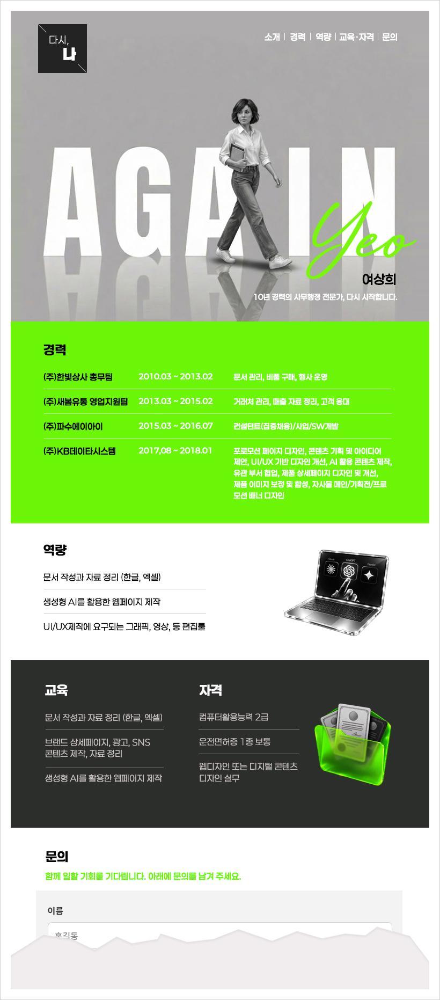

UI/UX DESIGNER AND CREATOR - YEOSANGHEE
MY WORK-ONEPAGE

포토샵에서 이미지를 만든 후 HTML로(with ChatGPT)
포토샵에서 DRAFT 작업을 한 후 머릿속에 구상한 배너이미지를 CHAT에 요청해서 앉히고
구조화된 프롬프트를 만들어 입력, 보완해가며 3번만에 내가 계획했던 간단한 한페이지짜리
홈페이지를 완성할 수 있었다.(VSCODE수업시 했던 기본 와이어프레임을 이용)

AI로 만들어두었던 미화된 내 이미지에
어울릴 배경색과 텍스트를 넣었고 2D
임에도 은근 입체감이 느껴지는 이미지
라 바닥과 반사되는 표현을 더해 마음
에 드는 결과물이 나왔고, 추가로 요구
한 내 성(Yeo) Calligraphy를 얹었다.
메뉴 hover시 primary color 1
(#7af70c-네온라임)로 전환되도록
설정, GNBbar이자 Header에
해당하는 top영역(footer역시)은
스크롤시 고정(fixed) 처리
네온라임 배경색에 흰
텍스트는 가독성이 떨어
졌지만 Chat은 이 부분
을 지적하지는 않았다.
width값을 지정해주지
않으면 브라우저 전체를
채운다.
구조화된 프롬프트로
요구하지 않아도 스스로
필요하다 판단한 UX를
적용한다.
재미있었던 게, 입력된
내용이 제대로 된 게
아니란 판단을 내렸는지
정말 이 내용대로 넣을지
확인을 해왔다.
연습용이니 그대로 진행
하라고 요구했다.
Chat은 문의를 진짜
주고 받을 수 있게 처리해
줄지, 깊이있는 추가기능
까지 선택여부를 물었다.
투명 아크릴, 유리소재로 된 3D 노트북과
파일안에 들어있는 수료증 이미지를 요구
했는데 마음에 드는 결과물이 나오기까지
10여차례 진행이 되었고 primary color
2가지와 회색계열 이용을 한정지었으나
자꾸 다른 색(보라색)을 섞어서 포토샵에서
부분 선택후 grayscale로 변경해야했다.